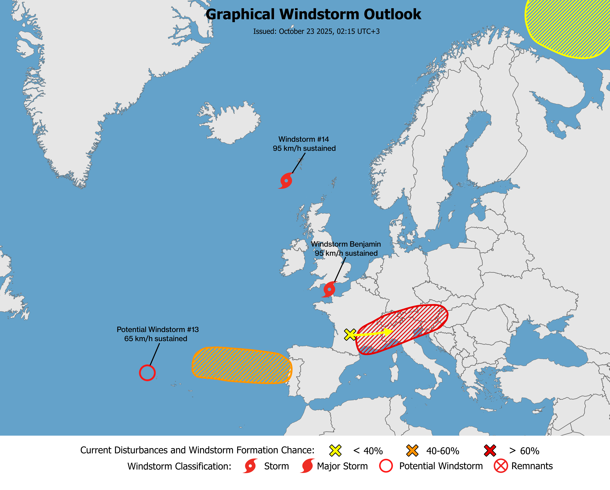
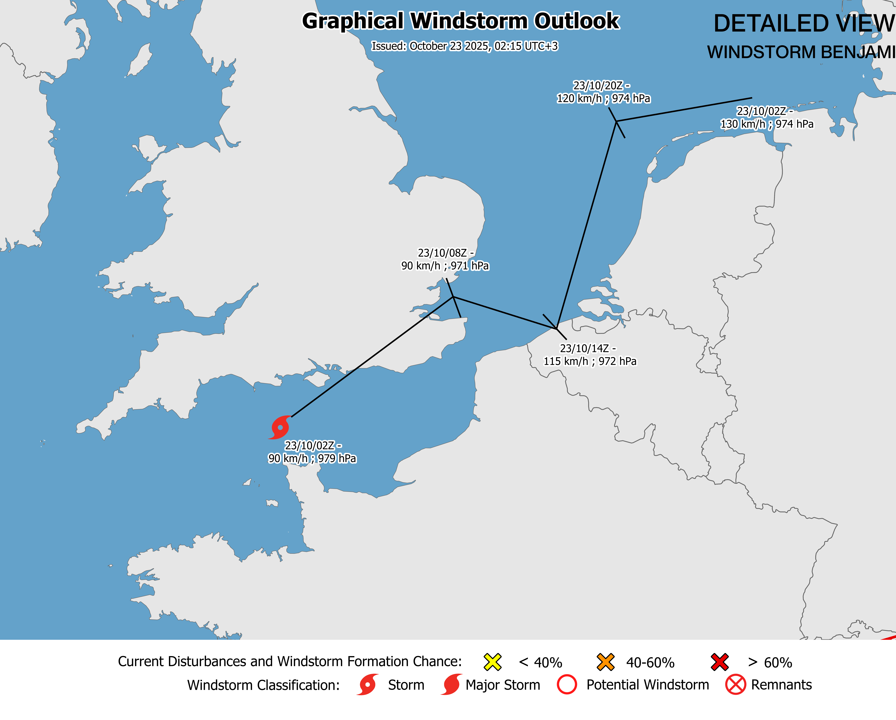

Outlooks
⚠️ These outlooks are not official.
Issued: [October 23 2025, 02:25 UTC+3]
Current conditions: [Windstorm Benjamin has developed, and may reach Major Storm status near the Netherlands. Be prepared for damages.]
Expected winds: [#13 - 65 km/h sustained ; #14 - 95 km/h sustained ; #Benjamin - 90 km/h sustained ; # - 0 km/h sustained]
Next update: [October 23 2025, 12:00 UTC+3]
Formation chance within 48 hours: [AOI #1 - 30 percent / AOI #2 - 0 percent / AOI # - - percent]
Formation chance within 7 days: [AOI #1 - 100 percent / AOI #2 - 50 percent / AOI # - - percent]
Discussion
Potential Windstorm #13 - A Potential Windstorm west of the Azores is causing heavy rainfall and strong winds. The system will linger for some time, weakening into remnants before strengthening again.
Potential Windstorm #14 - The latest ASCAT pass identified Windstorm #14 with sustained winds of 95 km/h, resulting in strong winds over the waters. It is located northwest of Scotland.
Windstorm Benjamin - Windstorm Benjamin has recently developed into a Windstorm and is expected to intensify further. The strongest impacts will be felt in the Netherlands, where gusts of up to 150 km/h are possible. Major Storm status is likely. INIT - 90 km/h ; 979 hPa 06H - 90 km/h ; 971 hPa 12H - 115 km/h ; 972 hPa 18H - 120 km/h ; 974 hPa 24H - 130 km/h ; 974 hPa
AOI #1 # - A significant rain system in southern France is starting to organize and move eastward. It is expected to develop into a low pressure area, leading to intensification as it reaches Italy. There is a possibility that this system may achieve Windstorm status. Heavy rainfall is forecast, along with substantial snowfall in higher elevations.
AOI #2 - The recent ECMWF and ICON-EU models have aligned on the development of a low-end, short-lived Potential Windstorm west of Portugal, expected on Friday or Saturday. Heavy rainfall is likely in Portugal as a result of this system.
AOI #3 - A low pressure system will form north of Finland and may become a Windstorm on Saturday. No impacts to land are anticipated.
Detailed / Regional View
⚠️ These outlooks are not official.
Issued: [October 23 2025, 02:25 UTC+3]
Current conditions: [Sustained winds of 90 km/h, rapid intensification expected today.]
Expected winds: [130 km/h sustained, 150 km/h gusts]
Next update: [October 23 2025, 12:00 UTC+3]
Formation chance within 48 hours: [AOI # - 0 percent / AOI # - - percent]
Formation chance within 7 days: [AOI # - 0 percent / AOI # - - percent]
Discussion
Windstorm Benjamin - Windstorm Benjamin has recently developed into a Windstorm and is expected to intensify further. The strongest impacts will be felt in the Netherlands, where gusts of up to 150 km/h are possible. Major Storm status is likely. INIT - 90 km/h ; 979 hPa 06H - 90 km/h ; 971 hPa 12H - 115 km/h ; 972 hPa 18H - 120 km/h ; 974 hPa 24H - 130 km/h ; 974 hPa